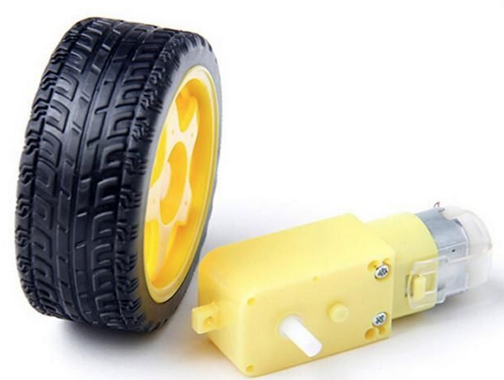
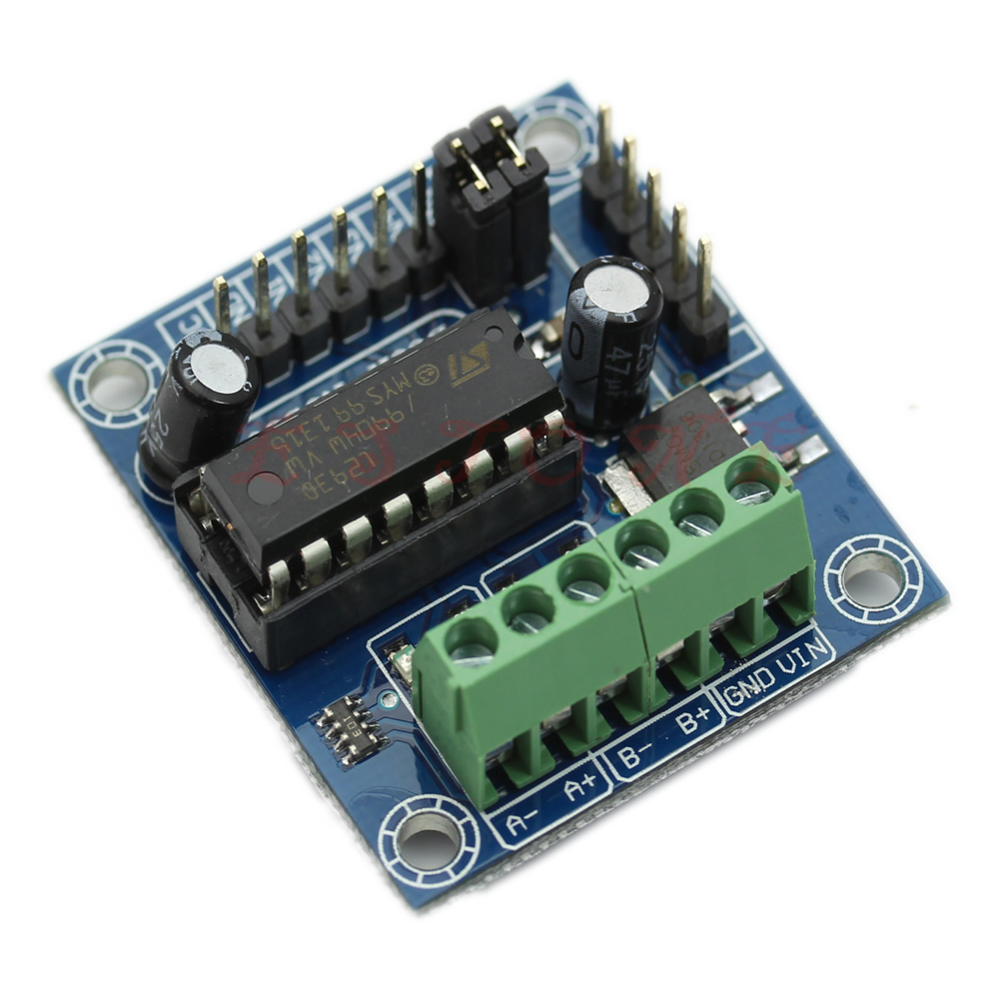

Components
We have designed this robot using common components that are low cost and easy to find on-line. You can build your own robot by purchasing parts on sites like eBay or work with a pre-built robot in the CoderDojo sessions.
Here is a summary of the parts we use.
| Part Name | Approximate Cost | Sample Links |
|---|---|---|
| Arduino Nano | $2.70 | e-bay pick-click |
| Robot Chassis with 4AA battery holder | $11 | e-bay pick-click |
| 1/2 Size 400 point Solderless Breadboard | $1.09 | e-bay pick-click |
| 170 tie point mini solderless breadboard | $1 | e-bay |
| L293D Motor Controller | $1.54 | e-bay e-bay-qty-10 |
| Ultrasonic Ping Sensor HC-SR04 | $1 | e-bay |
| M-F Dupont Connectors (need 6) | $1 | e-bay |
| Power Switch | $1 | e-bay |
| USB 2.0 Cable (A Male to Mini) 50cm | $1.70 | e-bay |
| 4 AA Batteries | $2.00 | Costco |
| Total | $24.32 |
There is also a sample collection of parts on e-bay here. Note that the links may point to items that are no longer for sale. However you can find parts with similar descriptions and purchase these parts. You can use our cost estimator Google Docs spreadsheet here.
A blog post with sample parts is listed here. Note that the links that this article provides might change, however you should be able to find similar parts using the keywords provided.
Now lets step through each of our individual components.
Arduino compatible Nano¶
This low-cost microcontoller component is the "brains" of our robot. Some of these can be ordered with a USB connector so we can connect them directly to our laptop or desktop computer. We can purchase these for under $5.00. The Nano has eight Analog inputs and 14 Digital input/output pins, six of them can be used to control motor speed with PWM signals. Note that ONLY pings 3, 5, 6, 9, 10, and 11 have PWM output. We will be using Digital Output pins 3,5,6 and 9 in our book.
Make sure you read our Getting Started section to properly load the CH340 USB interface.

See Arduino Nano Specication for the full specification.
2 DC Motors and Wheels¶
We have decided to use simple Direct Current (DC) motors for our robots. These motors are low cost and work under a variety of voltages from 6 to 12 volts. They come included with our Robot Chassis.

L293D Two Motor Controller¶
This part allows us to send signals to each motor to turn the wheels forward and backwards. It has a set of screw terminals to connect the motors and power. This board also has a voltage regulator that will convert voltages from 6 to 12 volts down to 5 volts for controlling our Arduino Nano.

This part allow us to drive two motors.
See the Wikipedia page for more on how the H-Bridge circuit works.
You can use the keywords "Mini Motor Drive Shield Expansion Board L293D Module For Arduino" to find your own parts. There are many good on-line tutorials on how these parts work. One example is here. These devices can be found for $1.54 (including shipping) when ordered on e-bay.
Ultrasonic Distance Sensor¶
We will use low-cost HC-SR04 ultrasonic distance sensors for our robot. They send out a set of ultrasonic pulse waves out of one speaker and listen for the pulse to return to a microphone. The delay of the return signal corresponds to a distance of an object in front of the robot. They can be purchased for around a dollar on e-bay.

We will also use a powerful library to convert the signals into distance measurements.
New Ping
Solderless Breadboards¶
The robot kit comes with two solderless breadboards, One has 400 connection points and the other smaller board for the sensors has 170 connection points.